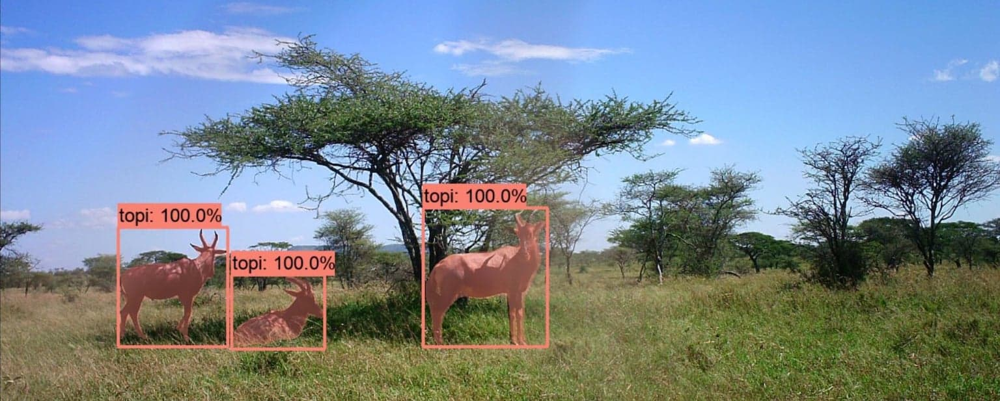

CV4E 2022 Course Content

Syllabus
All Recorded Lectures
- Intro and Logistics (Sara Beery) [Slides]
- Dataset Prototyping and Visualization (Jason Parham) [Slides]
- Working on the Cloud (Suzanne Stathatos) [Video] [Slides]
- Data Splitting and Avoiding Data Poisoning (Sara Beery) [Video] [Slides]
- Deciding on Configurations, Launching, Monitoring, Checkpointing, and Keeping Runs Organized (Benjamin Kellenberger) [Video] [Slides]
- Working with open-source CV codebases - Choosing a baseline model and custom data loading (Sara Beery) [Video] [Slides]
- Evaluation Metrics (Elijah Cole) [Video] [Slides]
- Offline Evaluation and Analysis (Sara Beery) [Video] [Slides]
- What's next? Rules of thumb to improve results (Benjamin Kellenberger) [Video] [Slides]
- Data Augmentation (Bjorn Lutjens) [Video] [Slides]
- Expanding and Improving Training Datasets with Models: Weak supervision, self supervision, targeted relabeling, and anomaly detection (Tarun Sharma) [Video] [Slides]
- Fair Comparisons and Ablation Studies - Understanding What is Important (Elijah Cole) [Video] [Slides]
- Efficient Models and Speed vs Accuracy (Justin Kay) [Video] [Slides]
- Serving, Hosting, and Deploying Models and Quality Control (Jason Parham) [Video] [Slides]